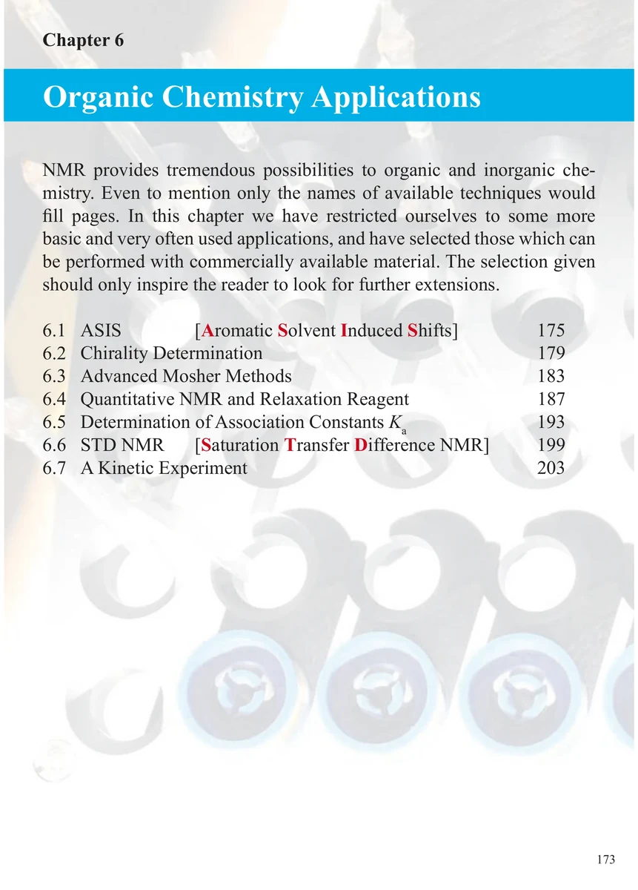
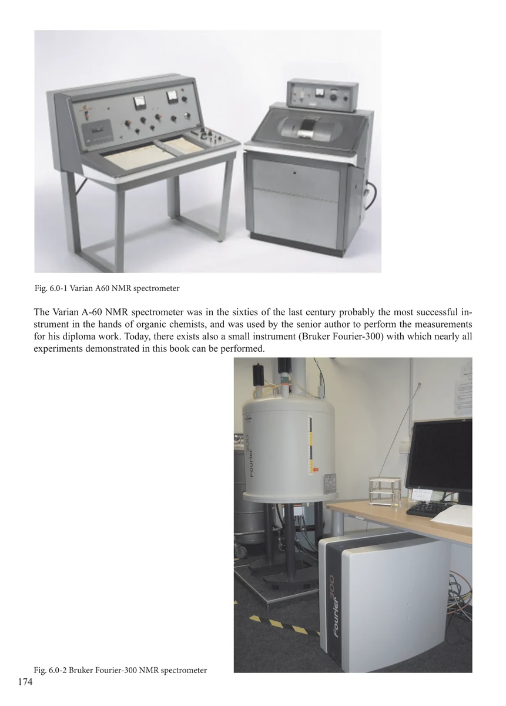

Chapter 6
Organic Chemistry Applications
有机化学应用
PDF 183–184 · 原书 173–174 · Organic Chemistry Applications


核磁共振实验方法、脉冲序列与谱图实践
Chapter 6
有机化学应用
PDF 183–184 · 原书 173–174 · Organic Chemistry Applications

